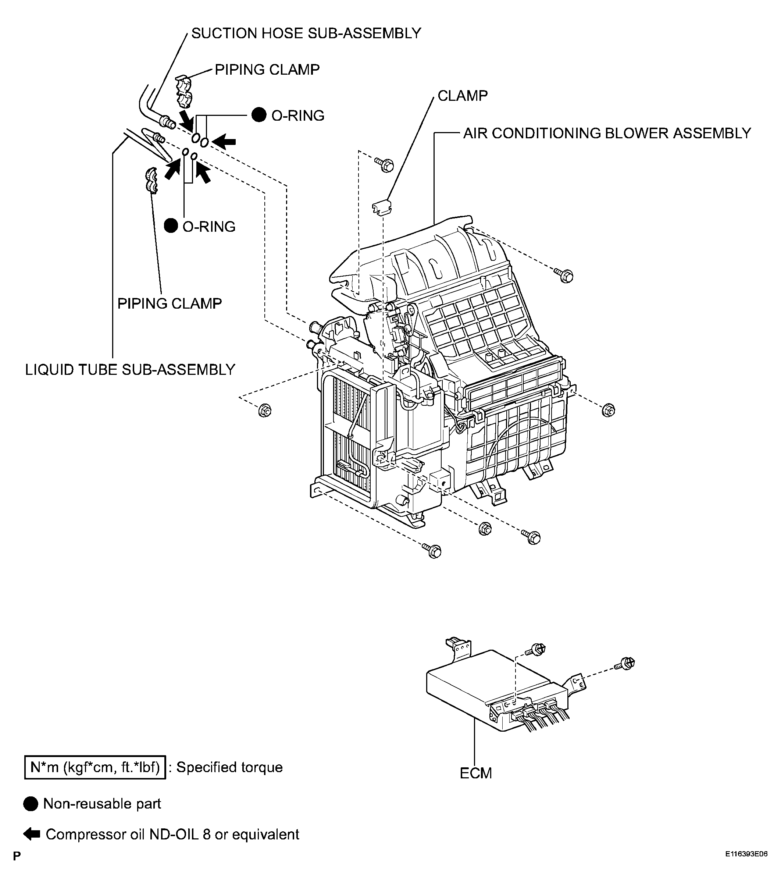
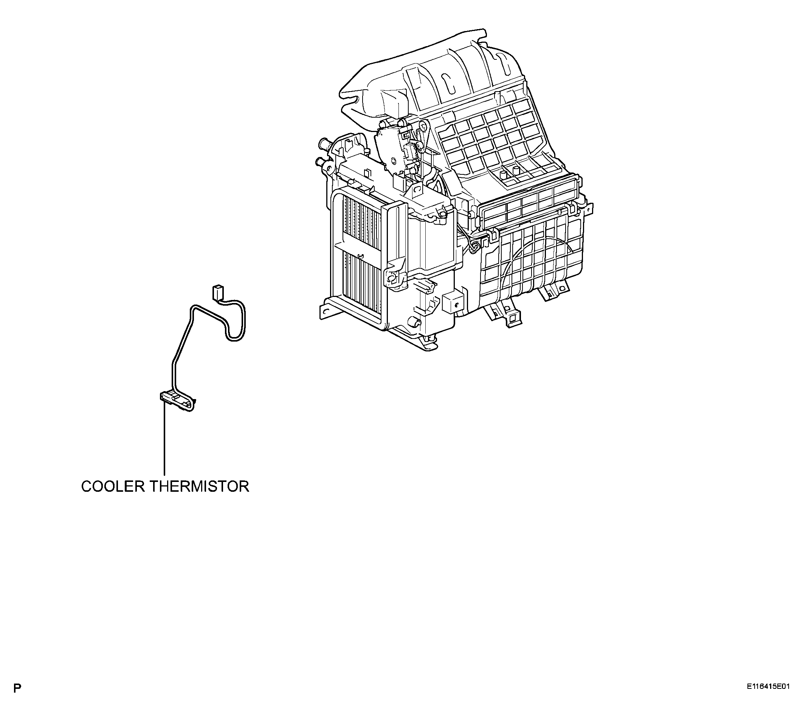

Evaporator Temperature Sensor: Components
Fig 1: Identifying Evaporator Temperature Sensor Components (1 Of 2)

Courtesy of © TOYOTA, LICENSE AGREEMENT TMS1002
Fig 2: Identifying Evaporator Temperature Sensor Components (2 Of 2)

Courtesy of © TOYOTA, LICENSE AGREEMENT TMS1002